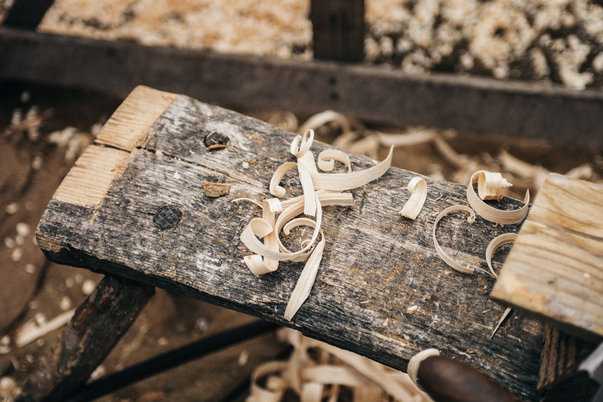
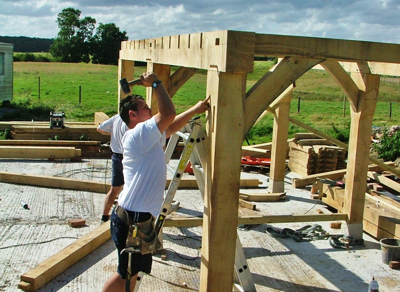

| We were established in 2003 by Mark Eastwood who is an experienced craftsman with years of experience in joinery, carpentry and working with Oak. |
 |
|
Traditional oak building experts, Acorn Buildings are a small company based in the South of England covering the whole of the UK. |
| Customers appreciate they are getting the quality, security and satisfaction they would expect from a much larger company at the price they would expect from a small company. |
 |
 |
Partners Mark and Don know that dealing with a small company benefits the client as they get to liaise directly with the craftsman who is in charge of the construction of their oak building. This adds an element of individual character to every building Acorn construct and a pleasing end result for the client. |
| We offer traditional oak buildings designed individually to your needs. We use oak to construct our buildings as we have worked with the material for years and know the quality of the wood will last for years to come. |
 |